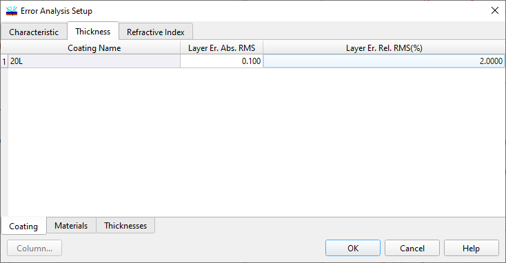
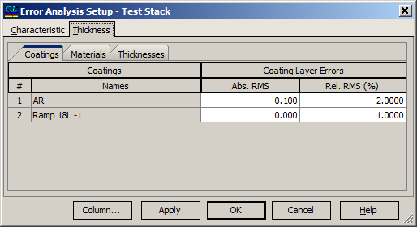
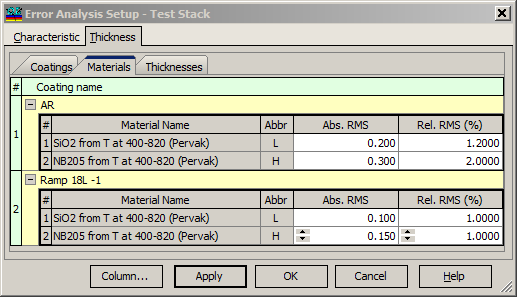
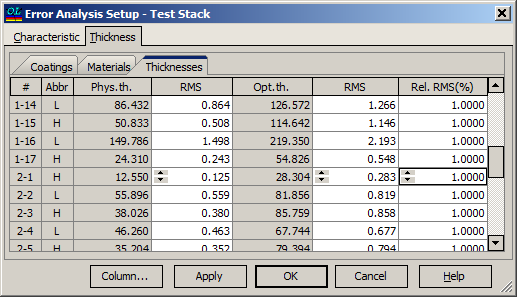

Thickness Error Analysis Setup
Thickness Errors Analysis Setup
This dialog allows for setting thickness errors for each layer and launching the Error Analysis.
Thickness errors can be specified in several ways. First of all, thickness errors can be specified as a sum of absolute and relative errors, with the values being the same for all layers of the coating.

This setting is available in the first “Coating” sub-tab of the “Thickness” tab. The resulting RMS error for the j-th layer of the coating is calculated with the formula:
RMSjres = RMSabs + RMSrel dj ,
where dj are the layer thicknesses.
If a Stack with several coatings is loaded, this option allows setting RMS levels for every coating in the stack independently. For example, for a stack having a RAMP coating and an AR coating, the dialog looks like this:

In more complex situations, it may be necessary to specify RMS levels for the layer materials in each coating independently. The “Materials” sub-tab is designed to support this.

All coatings included in the currently loaded stack are listed on this tab; the list can be expanded and collapsed. Settings for absolute and relative RMS levels for every material in every coating can be specified; the resulting RMS is computed using the same formula as presented above for the coating case. In some situations, it may be required to set thickness errors for every layer in each coating. This can be performed using the third “Thicknesses” sub-tab. On this tab, thickness errors can also be specified as absolute root-mean-square values (RMS column) and as relative values, i.e., as a percentage of the corresponding layer thickness (Rel.RMS column). The default values are 1% relative errors.
|
Note: In older versions of OptiLayer, errors specified at the Thicknesses tab were linked to each other, i.e., RMS relative errors were recalculated to absolute levels and vice versa depending on the column selected for editing. This has changed in the latest releases. |
|
Note: In the current release, the total error of layer thicknesses specified at the Thicknesses tab is considered as the sum of RMS and Rel. RMS values. This provides full consistency with errors specified at the Coatings or Materials tab. |

To adjust the error levels for the physical or optical thicknesses of any layer in your software application, follow these steps:
Change Physical Thickness Error:
Navigate to the Thicknesses tab.
Locate the column labeled “RMS” directly adjacent to the Phys.th. column.
Select the cell corresponding to the layer for which you want to modify the error and enter the new value.
Change Optical Thickness Error:
In the same Thicknesses tab, find the “RMS” column next to the Opt.th. column.
Choose the desired cell and input the updated RMS value for the optical thickness error of the selected layer.
Modify Relative Error:
Find the column labeled “Rel.RMS(%)”.
Click the cell that corresponds to the layer whose relative error you wish to adjust and type in the new percentage.
Access Advanced Settings via Column Editor:
Click the “Column…” button to open the Column Editor. for more complex modifications and settings.
Apply Changes and Start Error Analysis:
Once all adjustments are made, click the “OK” button. This will save the changes and initiate the Error Analysis procedure.
The outcomes of this analysis will be shown in the Error Analysis Results window.
Note that the errors utilized for computations are pulled from the data specified at the last accessed tab among Coatings, Materials, or Thicknesses.
For more detailed guidance, refer to the sections